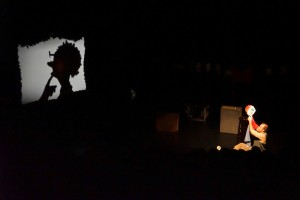

Skyggeteaterkurs with Jeff Achtem - Bunk Puppets Workshop (FREDRIKSTAD) - 1 dag
- Kategori:
- Tverrfaglige kurs
Tverrfaglige kurs
Åpent for profesjonelle skuespillere og andre profesjonelle deltakere med spesifisert bakgrunn og erfaring. Se søknadsteksten for spesifikasjoner. Legg ved CV. - Dato:
- 13.11.2014 til 13.11.2014
- Start kl :
- 16:00
- Slutt kl :
- 20:00
- Pris:
- 300,-
- Adresse:
- Fredrikstad kulturskole, Dokk 3A 1671 Kråker, Fredrikstad
Jeff Achtem er på Norgesturne og i den anledning arrangerer Norsk Skuespillersenter kurs i Skyggeteater i Fredrikstad i samarbeid med Det Andre Teateret og Scenekunst Østfold.
{kind=link}
Jeff Achtem lager skyggeteater med biter av avfall og husholdningsobjekter. Hans enmannsshow er med publikumsinteraksjon og en leken tilnærming til klovning og visuell historiefortelling en original vri på tradisjonelt skyggeteater. Som en fleksibel utøver har han spilt for fulle hus rundt om i verden: Off-broadway New York, kabaretteater i Berlin, West-End i London, og på store utsolgte scener under Edinburgh Fringe-Festival.
Pressen har skrevet om hans forestillinger:
"Astounding visual effects"
Broadway Baby Edinburgh (UK)
"… be first intrigued and then thrilled by this vivid shadowplay. Achtem’s
creations travel from the stage to the stalls, to the walls, to the ceiling
and right into your head. Innovative, memorable, fun."
The Times London (UK)
“Playfully challenging every conceivable boundary of puppetry, Mr.
Achtem transforms the audience itself into his personal puppeteering
brigade as the plot’s main journey bursts beyond the confines of both the
shadow world and the stage itself. A must-see for children and adults
alike."
Theatre Guide London (UK)
“Wonderfully enchanting, an absolute delight!... breathtaking moments!"
London Evening Standard (UK)
“One of the most spellbinding moments of puppet theatre I have ever
encountered.”
The Stage (UK)
"Gasps of wonder and amazement"
Edinburgh Reporter (UK)
"Gripping and technically marvelous!"
Three Weeks Edinburgh (UK)
Pris for medlemmer av Norsk skuespillerforbund: 250